Introduction
We all know how developing software with nice GUI often requires us to use available controls and add some value here and there.
Developing controls based on the Windows Presentation Foundation (WPF) with the Model View ViewModel (MVVM) pattern is no different,
except that we can use a technology that gives us a lot of flexibility towards
designing a GUI that can be changed in many aspects even after the software
developer has finished his job. The solution presented in this article builds on
[1] and goes a step further by enhancing an available control (I picked Combobox [2] as sample) with a gotcha.
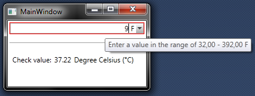 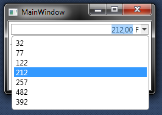 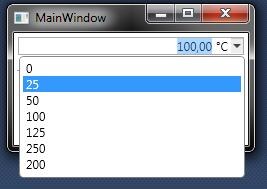
The solution presented in this article can be applied to any look-less WPF control. You should therefore, view this article as a template for future enhancements that you might be making to the existing set of controls that are at your disposal. The presented sample is so 'simple' that you could implement the same functionality by just changing the control template of the standard control. There are, however, situations in which this is not sufficient [8] where we need to add or change more than just what is presented here. You should, therefore, see this as
an introduction to a concept that you can apply later on to other more complex situations.
The article is presented in two parts, the next section is going to examine the general steps that are required to get us started. The next sections build on the first with a specific sample implementation.
Getting Started
This section contains a general guide that lists steps necessary to implement a control that inherits from another WPF control. You can safely skip to the next section if you are familiar with the general concept.
The first step is to create a new WPF Application project called "UnitCombobox" in Visual Studio 2010 or later. Then add a Class Library project named "UnitComboLib" to this solution.
Next we add the class that inherits from the WPF ComboBox class [2]. You can use a VS 2010 extension to add a new custom control [3] (which will essentially add a new XAML and .cs file)
or you can add the XAML and .cs file manually. Either way, your control
should be called: UnitCombobox and the corresponding files should be called UnitCombobox.xaml and UnitCombobox.cs.
The UnitCombobox.xaml file should have this content:
<!---->
<Style TargetType="{x:Type local:UnitCombobox}">
<Setter Property="Template">
<Setter.Value>
<ControlTemplate TargetType="{x:Type local:UnitCombobox}">
<Border Background="{TemplateBinding Background}"
BorderBrush="{TemplateBinding BorderBrush}"
BorderThickness="{TemplateBinding BorderThickness}">
</Border>
</ControlTemplate>
</Setter.Value>
</Setter>
</Style>
</ResourceDictionary>
...and the UnitCombobox.cs file should have this content to get us started:
using System;
using System.Collections.Generic;
using System.Linq;
using System.Text;
using System.Windows;
using System.Windows.Controls;
using System.Windows.Data;
using System.Windows.Documents;
using System.Windows.Input;
using System.Windows.Media;
using System.Windows.Media.Imaging;
using System.Windows.Navigation;
using System.Windows.Shapes;
namespace UnitComboLib
{
public class UnitCombobox : Control
{
static UnitCombobox()
{
DefaultStyleKeyProperty.OverrideMetadata(typeof(UnitCombobox),
new FrameworkPropertyMetadata(typeof(UnitCombobox)));
}
}
}
Now you have to add a reference to the standard .NET Framework assemblies "WindowsBase", "PresentationCore",
"PresentationFramework", and "System.XAML" into the "UnitComboLib" project if you started with an empty Class Library project.
Next, we have to reference the new XAML file in a "Themes/Generics.XAML" file:
<ResourceDictionary xmlns="http://schemas.microsoft.com/winfx/2006/xaml/presentation"
xmlns:x="http://schemas.microsoft.com/winfx/2006/xaml">
<ResourceDictionary.MergedDictionaries>
<ResourceDictionary Source="UnitComboLib;component/UnitCombobox.xaml" />
</ResourceDictionary.MergedDictionaries>
</ResourceDictionary>
...and add a ThemeInfo reference in the AssemblyInfo.cs file of the "UnitComboLib" library:
[assembly: ThemeInfo(
ResourceDictionaryLocation.None,
ResourceDictionaryLocation.SourceAssembly
)]
You might already know from [1] (part 2) that these two additions are required to let the .NET
Framework know that we are creating an assembly that contains one or more definitions of a look-less control. The framework will use this information to look into the "Themes/Generics.xaml" file to find at least a standard generic definition for a control, if all else fails (e.g.: we missed to define the XAML in an application's resource dictionary files).
Now that is all that is needed to define a look-less control (without inheritance) in WPF. So, let's test how we are doing so far:
Add a reference from the UnitCombobox project into the UnitComboLib project. Open the MainWindow.xaml file and enter the following content:
<Window x:Class="UnitCombobox.MainWindow"
xmlns="http://schemas.microsoft.com/winfx/2006/xaml/presentation"
xmlns:x="http://schemas.microsoft.com/winfx/2006/xaml"
Title="MainWindow" Height="350" Width="525"
xmlns:unitcmb="clr-namespace:UnitComboLib;assembly=UnitComboLib"
>
<Grid>
<unitcmb:UnitCombobox HorizontalAlignment="Left" VerticalAlignment="Center"
MinWidth="100" MinHeight="23"
BorderBrush="Black" BorderThickness="1"/>
</Grid>
</Window>
...which should be equivalent to this:
...and the result should look something like this:
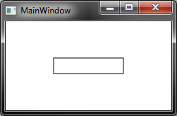
Doin' good so far. Now, you might wonder why this control is so empty and does not look like a combobox at all. That is because the XAML is empty. Its skin - so to speak - contains nothing but the standard border which can be activated with the code
in the MainWindow.XAML file.
The next subsection lists the generic steps that are necessary to bring more life into this by implementing inheritance from a standard WPF control.
Implementing Inheritance
Inheriting from a look-less WPF control includes of course the trivial inheritance C# language construct that we can add into the UnitCombobox.cs file.
So, just replace the Control statement with the ComboBox statement:
public class UnitCombobox : Control
public class UnitCombobox : ComboBox
Now let's take a long hard look at [2] and evaluate the Syntax section and the TemplatePartAttribute tags there in particular:
[TemplatePartAttribute(Name = "PART_Popup", Type = typeof(Popup))]
[LocalizabilityAttribute(LocalizationCategory.ComboBox)]
[TemplatePartAttribute(Name = "PART_EditableTextBox", Type = typeof(TextBox))]
[StyleTypedPropertyAttribute(Property = "ItemContainerStyle", StyleTargetType = typeof(ComboBoxItem))]
public class ComboBox : Selector
The above tags should be added to the definition of the derived class.
These tags define that any implementation of the ComboBox control will have to define at least a "PART_Popup" and a "PART_EditableTextBox" component. Their particular type is indicated by this "PART_" naming convention.
Now, you might wonder where on earth can I get these from and how difficult is this? Its actually not too difficult, yet. Just look up the XAML in [4] and paste both XAML sections in inverse
order in the UnitCombobox.xaml file. The resulting solution should look as indicated in Download UnitCombobox_Step1.zip and the result should look like this:
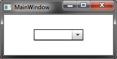
Yeah, that looks more like a combobox. And this is about it as far as inheritance goes. In a nutshell, that
is all there is to inheriting from a look-less WPF control. I hope this little guide has got you started. Come back as often as you like to get started with another cool control. The remainder of this article explains how I extended that WPF Combobox control to add a unit popup control that can be used to suggest standard values based on a given unit.
The UnitCombobox Control - Step 1
I recently set out to implement a similar zoom control as the editor of the Visual Studio 2010/2012 sports in its left bottom corner. It occurred to me that the control (even in VS 2012) has a percent character in its text portion and that it seems to be somewhat redundant there. Clearly, users can simply add an integer number and the control will translate that information back into the percentage view as we are now used to it from Office and countless other such zooming applications.
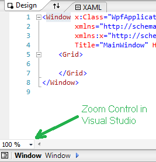
But my point is this: Why is the '%' character part of the text portion when WPF offers a simple mechanisms, such as, displaying a label at the exact same position? Clearly, everyone could find an improvement in that since developers do not have to worry about special parse routines and user can just enter whatever number they like. The answer to this is (most likely) history. We are so used to these that we stopped questioning - have not (yet) implemented WPF full circle and often don't see little improvements like this.
So, my first idea was to display the "%" character in a label next to the text portion and be done with that. But that idea was quickly extended by another idea where I wanted to make the label interactive and give the user a choice as to whether they want to scale there display in terms of font size (points) or percentages relative to a font size of 12 points. The control in my head looked something like this:
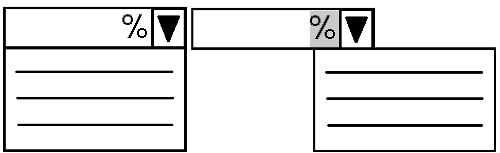
So, I implemented a few preliminary sketches in order to get into this idea.
This let me to a little side show where I investigated the usage and conversion of units in general. I briefly thought about implementing a general tool that would let you select among different units of a system (say length) and use and convert among things like Metrics and British-American System of Units. But I
quickly postponed that idea in favor of perusing my original goal.
This preliminary evaluation showed that popping up the context menu on simple mouse over (instead of a click) was a no go since it could be
really annoying if someone went into the text portion to input text and took the mouse cursor over to the drop down section to select a default value. This workflow may not occur so often but it was already in testing
annoying enough to make me believe that is better to offer the additional popup context menu on a left mouse click. Which let me to look further into these ideas (where I like the Web-Link look and feel best):
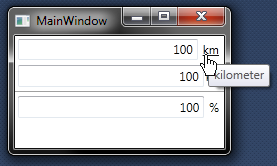
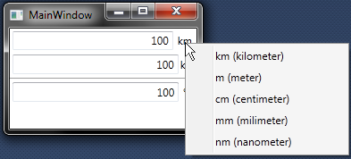
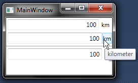
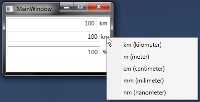
I developed a ContextMenuBehaviour behaviour [5] class for the above solution. This behavior can be attached to any FrameworkElement and be connected with a custom context menu that is shown on mouse click. So, this little extension lets use context menus on WPF items, such as, labels that where never designed to show a menu on left mouse click, -changing the mouse cursor on mouse over or the background color of the label is 'simple' XAML styling
that you can find the View/DistanceConvert.xaml files of the project.
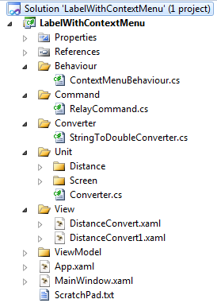
Here is for example the XAML code for web-link which is based on a textblock inside a label:
<TextBlock Text="{Binding SelectedItem.DisplayNameShort}" Name="LabelTextBlock">
<TextBlock.Style>
<Style TargetType="{x:Type TextBlock}">
<Style.Triggers>
<Trigger Property="IsMouseOver" Value="true">
<Setter Property="TextDecorations" Value="Underline" />
<Setter Property="Cursor" Value="Hand" />
</Trigger>
</Style.Triggers>
</Style>
</TextBlock.Style>
</TextBlock>
The Command, Unit, and ViewwModel packages in the above solution contain the well known RelayCommand class [6], a set of unit conversion classes, and the ViewModel classes necessary to drive the label-contextmenu control. You will see similar packages in the final solution, so you might want to revisit this project if you want to analyze a detail that is otherwise hard to understand in the final project.
The above solution contains a converter that is used to convert between the entered string in the textbox and the back end double value in the UnitViewModel class. It turned out later that we do not need this converter since the WPF framework does inject a standard converter if none is supplied in this case.
I ended up removing the converter solution, because it turned out that the user guidance with error feedback on entering specific values was too complicated to implement with a converter. Therefore, the final solution follows this approach [7] that suggest to implement the logic in the ViewModel using the IDataErrorInfo interface.
So, lets have a look at the final solution in the next section.
The UnitCombobox Control - Step 2
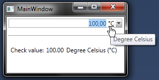
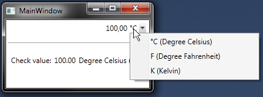
The final solution contains a combobox with an editable text portion and the clickable label which sports the context menu described in the previous section.
An important assumption on this control is that the back end of the application does in fact work with Degree Celsius rather than any other unit of temperature. This Celsius Degree value is, therefore, shown in the test application and is computed in the UnitViewModel (you might want to use a different unit instead):
public double TemperatureCelsius
{
get
{
if (this.SelectedItem != null)
{
double d = this.mUnitConverter.Convert(this.SelectedItem.Key,
this.mValue, Itemkey.TemperaturCelsius);
return d;
}
return Unit.Temperature.ConverterTemperature.DefaultTemperatureCelsius;
}
}
The key to understanding this control from scratch is in the Themes/Generic.xaml file. This file is evaluated when the system looks for the generic skin of the control (if none other is supplied) [1].
The Generic.xaml file includes the UnitCombobox.xaml file which contains the actual skin of the derived combobox control.
The XAML is almost identical to the ControlTemplate example [4]. The interesting and unique part of this solution is the label definition with
its textblock (and triggers as described previously):
<Label Grid.Column="0" Grid.Row="1"
Padding="0"
Margin="1,0,3,0"
BorderThickness="0"
ToolTip="{Binding SelectedItem.DisplayNameLong}"
HorizontalAlignment="Left"
VerticalAlignment="Center" VerticalContentAlignment="Center"
behav:ContextMenuBehaviour.MenuList="{Binding ElementName=contextMenuOnUniLabel1}">
<Label.ContextMenu>
<ContextMenu Name="contextMenuOnUniLabel1" ItemsSource="{Binding Path=UnitList}" Placement="Bottom">
<ContextMenu.ItemContainerStyle>
<Style TargetType="{x:Type MenuItem}">
<Setter Property="Command"
Value="{Binding RelativeSource={RelativeSource AncestorType={x:Type ContextMenu}},
Path=DataContext.SetSelectedItemCommand}"/>
<Setter Property="CommandParameter" Value="{Binding Key}"/>
<Setter Property="Header" Value="{Binding DisplayNameLongWithShort}" />
</Style>
</ContextMenu.ItemContainerStyle>
</ContextMenu>
</Label.ContextMenu>
<TextBlock Text="{Binding SelectedItem.DisplayNameShort}" Name="LabelTextBlock">
<TextBlock.Style>
<Style TargetType="{x:Type TextBlock}">
<Style.Triggers>
<Trigger Property="IsMouseOver" Value="true">
<Setter Property="TextDecorations" Value="Underline" />
<Setter Property="Cursor" Value="Hand" />
</Trigger>
</Style.Triggers>
</Style>
</TextBlock.Style>
</TextBlock>
</Label>
This label is bound to a UnitViewModel object when the control is instanciated in the MainWindow.xaml class (shown in the next listing below).
The SelectedItem property is the corresponding property based on the ListItem class. The context menu items are populated from the UnitList
collection in the UnitViewModel object. The behaviour drives the left mouse click on the label as described before and the style in the textblock section
gives the user an indication that he hovers over something that might be click-able.
<unit:UnitCombobox DataContext="{Binding SizeUnitLabel}"
Margin="1"
Padding="0"
BorderThickness="1"
BorderBrush="Transparent"
ItemsSource="{Binding SelectedItem.DefaultValues}"
ToolTip="{Binding ValueTip}"
IsEditable="True"
HorizontalAlignment="Stretch" VerticalAlignment="Top"
Grid.Row="0" Grid.Column="0" Grid.ColumnSpan="3">
<unit:UnitCombobox.Text>
<Binding Path="StringValue" Mode="TwoWay" ValidatesOnDataErrors="True"/>
</unit:UnitCombobox.Text>
</unit:UnitCombobox>
The code above is pretty much standard XAML for using comboboxes. Interesting here is the ToolTip binding which is used to give the user an initial hint towards he expectations on the input side of things. And the ValidatesOnDataErrors="True" bit tells WPF that a value to the string property StringValue may be assigned but has to be verified on each edit as Josh Smith already documented in his article [7]. Errors in validation are then highlighted with the WPF standard red frame and a corresponding tooltip.
The UnitViewModel class is the main ViewModel class of the UnitCombobox control. It is
instantiated via the AppViewModel class in the UnitCombobox tet application project.
The UnitViewModel class is the main ViewModel class of the UnitCombobox control. It is
instantiated via the AppViewModel class in the UnitCombobox test application project.
The SetSelectedItemCommand ICommand property in the UnitViewModel class fires off the command that is executed whenever the user changes the display unit via the context menu entry. This command executes the SetSelectedItemExecuted method, which in turn:
- Finds the next selected unit in the
this.mUnitList collection,
- Computes the conversion on the current double value (via the Unit package represented with the
mUnitConverter field),
- and sets the current unit to the selected unit (
this.mSelectedItem = li;).
The IsDoubleWithinRange method in the UnitViewModel class checks whether the current value is ok or not and implements the corresponding action.
It is invoked via the IDataErrorInfo interface as pointed out previously [7].
Conclusions
This project has shown another angle on applying WPF to interesting user interface solutions. It turns out that deriving from existing WPF controls and enhancing their capabilities can be done by re-defining their XAML skin and supplying a corresponding ViewModel. This is of course not a limitation, we can always add dependency properties and other gotchas if required, but it is awesome to see the
possibilities that are based on these rather 'simple' extensions.
I recently learned how to extend WPF controls through inheritance and wanted to pass this on to those who code. Please give me your feedback to find and correct possible errors. Let me know what you think about the control proposed here.
References
History
- 10. April 2013 Initial creation.